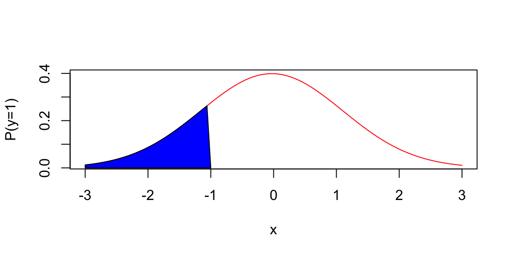
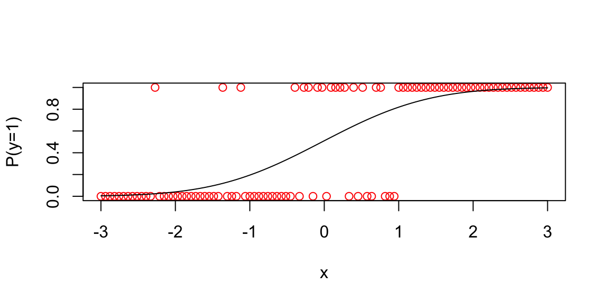
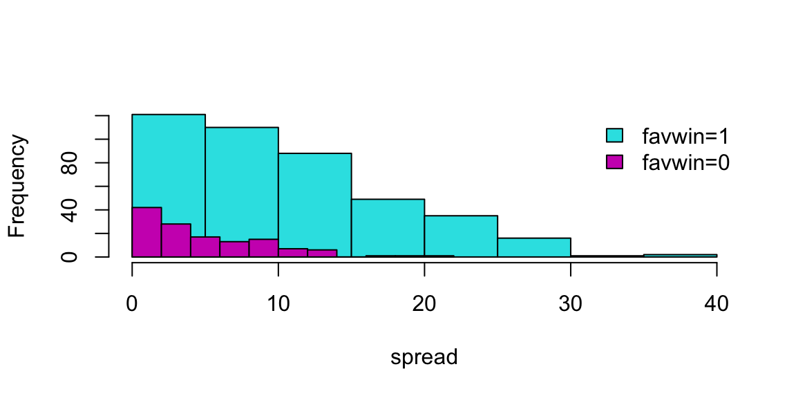
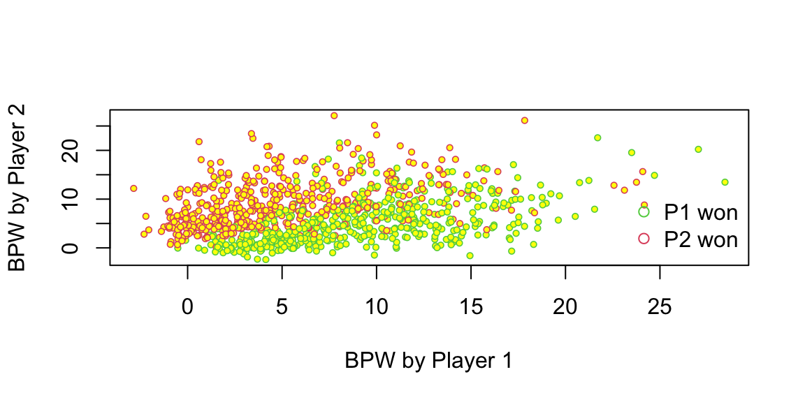
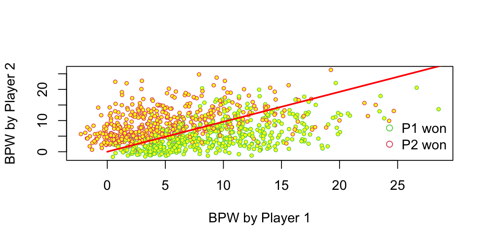
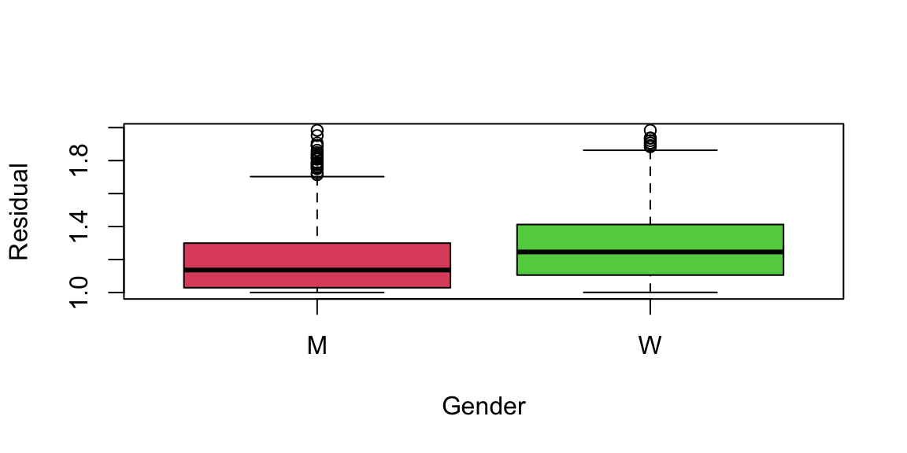
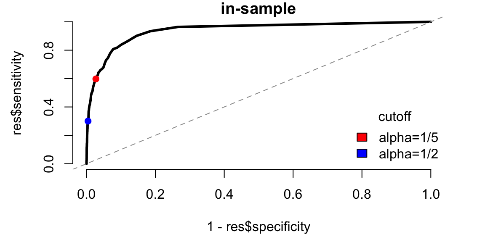
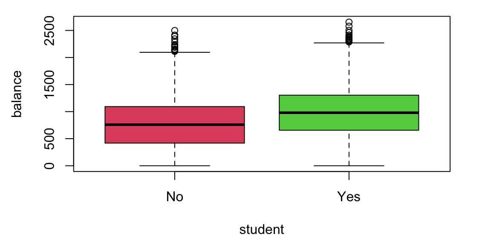
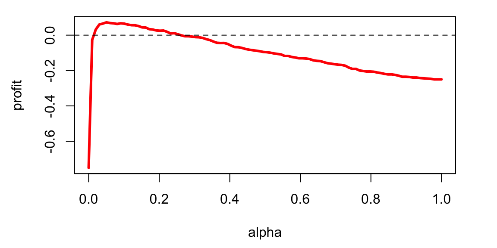
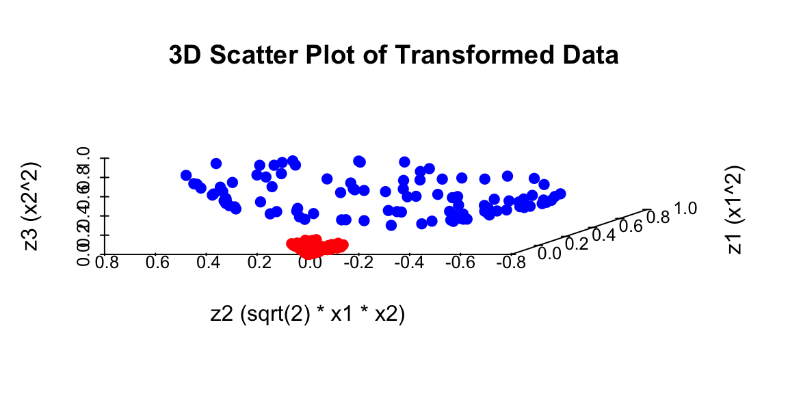

x = seq(-10,10,length.out = 100)
plot(x, 1/(1+exp(-x)), type='l', col="red", xlab="x", ylab="p", lwd=3)13 Logistic Regression
Classification is a type of predictive modeling where the goal is to predict a categorical variable based on a set of input variables. A categorical variable is a variable that can take on only a limited number of values, such as 0 or 1, or it can be a multi-class variable, meaning it can take on more than two values. For example, in medical diagnosis, we might want to predict whether a patient has a disease (1) or not (0) based on symptoms and test results. A particularly important application is in self-driving cars, where computer vision systems must classify objects in real-time from camera feeds - distinguishing between pedestrians, other vehicles, traffic signs, and road obstacles to make safe driving decisions.
Given observed data \((x_i,y_i)_{i=1}^n\), where each \(y_i\) is either 0 or 1, we start by assuming a binomial likelihood function for the response variable, defined as follows: \[ P(y_i = 1\mid p_i) = p_i^{y_i} (1-p_i)^{1-y_i}, \] where \(p_i\) is the function of the inputs \(x_i\) and coefficients \(\beta\) that gives us the probability of the response variable taking on a value of 1, given the input variables. A typical approach to calculate \(p_i\) is to use the logistic function \[\begin{align*} f_{\beta}(x_i) = & \beta^Tx_i\\ p_i = & \sigma(f_{\beta}(x_i)) = \frac{e^{f_{\beta}(x_i)}}{1+e^{f_{\beta}(x_i)}}, \end{align*}\]
where \(\beta\) is a vector of parameters. The logistic function \(\sigma(\cdot)\) is a function that maps any real number to a number between zero and one.
13.1 Model Fitting
Then we fit the model using binomial log-likelihood minimization. It leads us to the maximum likelihood estimator for parameters \(\beta\) (a.k.a cross-entropy estimator), defined as \[ \hat \beta = \arg\min_{\beta}\mathcal{L}(\beta), \] where \[ \mathcal{L}(\beta) = -\sum_{i=1}^n \left[ y_i \log p_i + (1-y_i) \log \left ( 1-p_i \right ) \right]. \] Similar to the least squares estimator, the cross-entropy estimator optimization problem is convex, so it has a unique solution.
In the unconditional case, when we do not observe any inputs \(x\), the cross-entropy estimator is again, the sample mean. If we take the derivative of the above expression with respect to \(\beta_0\) and set it to zero, we get \[ - \frac{d}{d\beta_0}\sum_{i=1}^n \left[ y_i \log \left ( \beta_0 \right ) + (1-y_i) \log \left ( 1-\beta_0 \right ) \right] = -\sum_{i=1}^n \left[ \frac{y_i}{\beta_0} - \frac{1-y_i}{1-\beta_0} \right] = 0 \] which gives us the solution \[ \hat{\beta}_0 = \frac{1}{n}\sum_{i=1}^n y_i. \] which is the sample mean.
Unlike the least squares estimator or the unconditional case, the system of equations \[ \nabla \mathcal{L}(\beta) = 0 \] is not linear and cannot be solved by inverting a matrix. However, there are efficient iterative numerical optimization algorithms that can be used to find the optimal solution. The most common one is the BFGS (Broyden-Fletcher-Goldfarb-Shanno) algorithm. It is a quasi-Newton method that’s particularly well-suited for optimizing the cross-entropy loss function in logistic regression.
When we have more than two classes \(y \in \{1,\ldots,K\}\), we build \(K-1\) models \(f_{\beta_1}(x),\ldots, f_{\beta_{K-1}}(x)\), one for each of the first \(K-1\) classes, while treating the \(K\)-th class as the reference class with \(f_{\beta_K}(x) = 0\). We then use the softmax function to convert the outputs into probabilities:
For classes \(j = 1, \ldots, K-1\): \[ P(y = j \mid x) = \frac{\exp(f_{\beta_j}(x))}{1 + \sum_{i=1}^{K-1} \exp(f_{\beta_i}(x))} \]
For the reference class \(K\): \[ P(y = K \mid x) = \frac{1}{1 + \sum_{i=1}^{K-1} \exp(f_{\beta_i}(x))} \]
Some implementations of the logistic regression use \(K\) models, one for each class, and then use the softmax function to convert the outputs into probabilities. This is equivalent to the above approach, but it is more computationally expensive.
The vector of non-scaled outputs \((f_{\beta_1}(x),\ldots, f_{\beta_{K-1}}(x))\) is called the logits.
The softmax function is a generalization of the logistic function to the case of more than two classes. It is often used as the activation function in the output layer of neural networks for multi-class classification problems. It converts the output of each model into a probability distribution over the classes, making it suitable for multi-class classification with probabilistic outputs.
The logistic function has a nice statistical interpretation. It is the CDF of the logistic distribution, which is a symmetric distribution with mean 0 and variance \(\pi^2/3\), thus \(p_i\) is simply a value of this CDF, evaluated at \(\beta^Tx_i\).
Further, Logistic regression models the log-odds (logit) of the probability as a linear function of the predictors, which aligns with the maximum likelihood estimation framework and provides desirable statistical properties. Specifically, if we invert the logistic function, \[ p_i = \sigma(\beta^Tx_i) = \frac{e^{\beta^Tx_i}}{1+e^{\beta^Tx_i}}, \] we get the log-odds \[ \log\left(\frac{p_i}{1-p_i}\right) = \beta^Tx_i. \] Meaning that \(\beta^Tx_i\) measures how probability of \(y_i = 1\) changes with respect to the change in \(x_i\) on the log-odds scale. It allows us to interpret the model coefficients as the log-odds ratios of the response variable.
In some disciplines, such as econometrics, psychology and natural sciences, a normal CDF is used instead of the logistic CDF. It is done for historical reasons and because the normal CDF has slightly different assumptions about the data, that might be more natural in some cases.
In the case of the normal CDF, the model is called probit, it stands for probability unit, and the link function is called probit link. The probit model is defined as \[ \Phi^{-1}(p_i) = \beta^Tx_i. \] where \(\Phi(\cdot)\) is the normal CDF.
The term probit was coined in the 1930’s by biologists studying the dosage-cure rate link. We can fit a probit model using glm function in R.
set.seed(92) # Kuzy
x = seq(-3,3,length.out = 100)
y = pnorm(x+rnorm(100))>0.5
probitModel = glm(y~x, family=binomial(link="probit"))
mc = as.double(coef(probitModel))
# we want to predict outcome for x = -1
xnew = -1
(yt = mc[1] + mc[2]*xnew)## [1] -0.86(pnorm(yt))## [1] 0.19(pred = predict(probitModel, list(x = c(xnew)), type="response"))## 1
## 0.19nd = dnorm(mc[1] + mc[2]*x)
plot(x,nd, type='l', col="red", xlab="x", ylab = "P(y=1)")
polygon(c(-3,x[x< -1],-1),c(0,nd[x< -1],0), col="blue")
Our prediction is the blue area which is equal to 0.195.
plot(x,y, type='p', col="red", xlab="x", ylab = "P(y=1)")
pred_probit = predict(probitModel, list(x=x), type="response")
lines(x,pred_probit, type='l')
Outside of specific fields, i.e., behavioral economics, the logistic function is a much more popular choice compared to the probit model. Besides the fact that it is more intuitive to work with the logit transform, it also has several nice properties when we deal with multiple classes (more than 2). Also, it is computationally easier than working with normal distributions. The density function of the logit is very similar to the probit one.
logitModel = glm(y~x, family=binomial(link="logit"))
pred_logit = predict(logitModel, list(x = x), type="response")
plot(x,pred_probit, pch=20, col="red", cex=0.9, ylab="y")
lines(x,pred_logit, type='p', pch=20, cex=0.5, col="blue")
lines(x,y, type='p', pch=21, cex=0.5, bg="lightblue")
legend("bottomright",pch=20, legend=c("Logit", "Probit"), col=c("blue","red"),y.intersp = 2)
Example 13.1 (Example: NBA point spread) We will use the NBA point spread data to illustrate the logistic regression. The data is available in the NBAspread.csv file. The data contains the point spread for each game in the NBA from 2013 to 2014 season. The data also contains the outcome of the game, whether the favorite won or not. The point spread is the number of points by which the favorite is expected to win the game and is predicted by the bookmakers. We simply want to see how well the point spread predicts the outcome of the game.
We start by loading the data and visualizing it.
NBA = read.csv("../data/NBAspread.csv")
n = nrow(NBA)
head(NBA)| favwin | favscr | undscr | spread | favhome | fregion | uregion |
|---|---|---|---|---|---|---|
| 1 | 72 | 61 | 7.0 | 0 | 3 | 4 |
| 1 | 82 | 74 | 7.0 | 1 | 3 | 1 |
| 1 | 87 | 57 | 17.0 | 1 | 3 | 3 |
| 0 | 69 | 70 | 9.0 | 1 | 3 | 3 |
| 0 | 77 | 79 | 2.5 | 0 | 2 | 3 |
| 1 | 91 | 65 | 9.0 | 0 | 3 | 4 |
hist(NBA$spread[NBA$favwin==1], col=5, main="", xlab="spread")
hist(NBA$spread[NBA$favwin==0], add=TRUE, col=6)
legend("topright", legend=c("favwin=1", "favwin=0"), fill=c(5,6), bty="n")
boxplot(NBA$spread ~ NBA$favwin, col=c(6,5), horizontal=TRUE, ylab="favwin", xlab="spread")

Does the Vegas point spread predict whether the favorite wins or not? The histogram shows the distribution of point spreads for games where the favorite won (turquoise) versus games where the favorite lost (purple). The boxplot provides another view of this relationship. Let’s fit a logistic regression model to quantify this relationship:
nbareg = glm(favwin~spread-1, family=binomial, data=NBA)
nbareg %>% tidy() %>% kable()| term | estimate | std.error | statistic | p.value |
|---|---|---|---|---|
| spread | 0.16 | 0.01 | 11 | 0 |
s = seq(0,30,length=100)
fit = exp(s*nbareg$coef[1])/(1+exp(s*nbareg$coef[1]))
plot(s, fit, typ="l", col=4, lwd=2, ylim=c(0.5,1), xlab="spread", ylab="P(favwin)")
The \(\beta\) measures how our log-odds change. For this model, we have \(\beta = 0.156\), meaning that for every one point increase in the point spread, the log-odds of the favorite winning increases by 0.156.
Now, we can use the model to predict the probability of the favorite winning for a new game with a point spread of 8 or 4.
predict(nbareg, newdata = data.frame(spread = c(8,4)), type = "response")## 1 2
## 0.78 0.65The code above simply “Plugs-in” the values for the new game into our logistic regression \[ { P \left ( \mathrm{ favwin} \mid \mathrm{ spread} \right ) = \frac{ e^{ \beta x } }{ 1 + e^{\beta x} } } \] We can calculate it manually as well.
exp(0.156*8)/(1+exp(0.156*8))## [1] 0.78exp(0.156*4)/(1+exp(0.156*4))## [1] 0.65Check that when \(\beta =0\) we have \(p= \frac{1}{2}\).
Given our new values spread\(=8\) or spread\(=4\), the win probabilities are \(78\)% and \(65\)%, respectively. Clearly, the bigger spread means a higher chance of winning.
Notice that the predict function returns a numeric value between 0 and 1. However, if we want to make a decision (to bet or not to bet), we need to have a binary outcome. A simple method to move between the predicted probability and binary value is to use thresholding. \[ \hat y_i = \begin{cases} 1 & \text{if } \hat p_i > \alpha \\ 0 & \text{if } \hat p_i \leq \alpha \end{cases} \] where \(\alpha\) is a threshold value. A typical choice is \(\alpha = 0.5\).
Now let’s calculate the number of correct predictions using threshold \(\alpha = 0.5\). R has a convenient table function that can summarize the counts of the predicted and actual values in a table.
table(NBA$favwin, as.integer(predict(nbareg, type="response")>0.5), dnn=c("Actual", "Predicted"))## Predicted
## Actual 1
## 0 131
## 1 422Our model gets 0.7631103 of the predictions correctly. This number is called accuracy of the model.
13.2 Confusion Matrix
We will analyse the tennis data set to show what is the decision boundary for the logistic regression model. The decision boundary is the line that separates the two classes. It is defined as the line where the probability of the favorite winning is 0.5. Then we will use the confusion matrix to evaluate the performance of the model.
Example 13.2 (Logistic Regression for Tennis Classification) Data science plays a major role in tennis, you can learn about recent AI tools developed by IBM from this Yahoo! Finance Article.
We will analyze the Tennis Major Tournament Match Statistics Data Set from the UCI ML repository. The data set has one per each game from four major Tennis tournaments in 2013 (Australia Open, French Open, US Open, and Wimbledon).
Let’s load the data and familiarize ourselves with it
d = read.csv("./../data/tennis.csv")
dim(d)## [1] 943 44Let’s look at a few columns of the randomly selected five rows of the data
d[sample(1:943,size = 5),c("Player1","Player2","Round","Result","gender","surf")]| Player1 | Player2 | Round | Result | gender | surf | |
|---|---|---|---|---|---|---|
| 532 | Florian Mayer | Juan Monaco | 1 | 1 | M | Hard |
| 816 | L.Kubot | J.Janowicz | 5 | 0 | M | Grass |
| 431 | Svetlana Kuznetsova | Ekaterina Makarova | 1 | 1 | W | Clay |
| 568 | Marcos Baghdatis | Go Soeda | 1 | 1 | M | Hard |
| 216 | Mandy Minella | Anastasia Pavlyuchenkova | 2 | 0 | W | Hard |
We have data for 943 matches and for each match we have 44 columns, including names of the players, their gender, surface type and match statistics. Let’s look at the number of break points won by each player. We will plot BPW (break points won) by each player on the scatter plot and will colorize each dot according to the outcome
n = dim(d)[1]
plot(d$BPW.1+rnorm(n),d$BPW.2+rnorm(n), pch=21, col=d$Result+2, cex=0.6, bg="yellow", lwd=0.8,
xlab="BPW by Player 1", ylab="BPW by Player 2")
legend("bottomright", c("P1 won", "P2 won"), col=c(3,2), pch=21, bg="yellow", bty='n')
We can clearly see that the number of break points won is a clear predictor of the match outcome. This is obvious and follows from the rules; to win a match, a player must win break points. Now, we want to understand the impact of winning a break point on the overall match outcome. We do it by building a logistic regression model
which(is.na(d$BPW.1)) # there is one row with NA value for the BPW.1 value and we remove it## [1] 171d = d[-171,]; n = dim(d)[1]
m = glm(Result ~ BPW.1 + BPW.2-1, data=d, family = "binomial" )
m %>% tidy() %>% kable()| term | estimate | std.error | statistic | p.value |
|---|---|---|---|---|
| BPW.1 | 0.40 | 0.03 | 15 | 0 |
| BPW.2 | -0.42 | 0.03 | -15 | 0 |
The predicted values are stored in the fitted.values field of the model object. Those are the probabilities of player 1 winning the match. We need to convert them to binary predictions using \(0.5\) as a threshold for our classification.
table(d$Result, as.integer(m$fitted.values>0.5), dnn=c("Actual", "Predicted"))## Predicted
## Actual 0 1
## 0 416 61
## 1 65 400This table shows the number of correct and incorrect predictions for each class. The rows are the actual outcomes and the columns are the predicted outcomes. The first row shows the number of matches where player 1 won and the model predicted that player 1 won. The second row shows the number of matches where player 1 lost and the model predicted that player 1 lost. Thus, our model got (400+416)/942 = 86.6242038% of the predictions correctly! The accuracy is the ratio of the number of correct predictions to the total number of predictions.
This table is called confusion matrix. It is a table that shows the number of correct and incorrect predictions for each class. The rows are the actual outcomes and the columns are the predicted outcomes. Formally, it is defined as
| Predicted: YES | Predicted: NO | |
|---|---|---|
| Actual: YES | TPR | FNR |
| Actual: NO | FPR | TNR |
Essentially, the logistic regression is trying to draw a line that separates the red observations from the green ones. In our case, we have two predictors \(x_1\) = BPW.1 and \(x_2\) = BPW.2 and our model is \[ \log\left(\dfrac{p}{1-p}\right) = \beta_1x_1 + \beta_2 x_2, \] where \(p\) is the probability of player 1 winning the match. We want to find the line along which the probability is 1/2, meaning that \(p/(1-p) = 1\) and log-odds \(\log(p/(1-p)) = 0\), thus the equation for the line is \(\beta_1x_1 + \beta_2 x_2 = 0\) or \[ x_2 = \dfrac{-\beta_1}{\beta_2}x_1 \]
Let’s see the line found by the glm function
legend("bottomright", c("P1 won", "P2 won"), col=c(3,2), pch=21, bg="yellow", bty='n')
x = seq(0,30,length.out = 200)
y = -m$coefficients[1]*x/m$coefficients[2]
lines(x,y, lwd=2, col="red") 
There are a couple of observations. First, the effect of a break point on the game outcome is significant and symmetric; the effect of losing a break point is the same as the effect of winning one. We also can interpret the effect of winning a break point in the following way. We will keep BPW.2 = 0 and will calculate what happens to the probability of winning when BPW.1 changes from 0 to 1. The odds ratio for player 1 winning when BPW.1 = 0 is exp(0) which is 1, meaning that the probability that P1 wins is 1/2. Now when BPW.1 = 1, the odds ratio is 1.5
exp(0.4019)## [1] 1.5We can calculate probability of winning from the regression equation \[
\dfrac{p}{1-p} = 1.5,~~~p = 1.5(1-p),~~~2.5p = 1.5,~~~p = 0.6
\] Thus probability of winning goes from 50% to 60%, we can use predict function to get this result
predict.glm(m,newdata = data.frame(BPW.1 = c(0), BPW.2 = c(0)), type="response")## 1
## 0.5predict.glm(m,newdata = data.frame(BPW.1 = c(1), BPW.2 = c(0)), type="response")## 1
## 0.6What happens to the chances of winning when P1 wins three more break points compared to the opponent
predict.glm(m,newdata = data.frame(BPW.1 = c(0), BPW.2 = c(0)), type="response")## 1
## 0.5predict.glm(m,newdata = data.frame(BPW.1 = c(3), BPW.2 = c(0)), type="response")## 1
## 0.77Chances go up by 27%.
Tennis is arguably the sport in which men and women are treated equally. Both men’s and women’s matches are shown during prime-time on TV, and they both have the same prize money. However, one of the comments you hear often is that women’s matches are “less predictable”, meaning that an upset (when the favorite loses) is more likely to happen in a women’s match compared to men’s matches. We can test this statement by looking at the residuals. The larger the residual the less accurate our prediction was.
outlind = which(d$res<2)
boxplot(d$res[outlind] ~ d$gender[outlind], col=c(2,3), xlab="Gender",ylab="Residual")
Let’s do a formal t-test on the residuals for men’s and women’s matches
men = d %>% filter(res<2, gender=="M") %>% pull(res)
women = d %>% filter(res<2, gender=="W") %>% pull(res)
t.test(men, women, alternative = "two.sided") %>% tidy() %>% kable()| estimate | estimate1 | estimate2 | statistic | p.value | parameter | conf.low | conf.high | method | alternative |
|---|---|---|---|---|---|---|---|---|---|
| -0.07 | 1.2 | 1.3 | -4.7 | 0 | 811 | -0.11 | -0.04 | Welch Two Sample t-test | two.sided |
The difference of \(0.07\) between men and women and the statistic value of \(-4.7\) means that the crowd wisdom that women’s matches are less predictable is correct. The difference is statistically significant!
13.3 ROC Curve and Confounding Variables
Using default data set, we will illustrate the concept of ROC curve and confounding variables.
Example 13.3 (Credit Card Default) We will use the Default data set from the ISLR package to illustrate the logistic regression. The data set contains information on credit card defaults. Credit risk assessment is a major application of logistic regression and is widely used in the financial industry. In fact, the banks with the best credit risk assessment models are the ones that are able to offer the best interest rates to their customers and are winning the market.
We will also use this example to illustrate the concept of ROC (Receiver Operating Characteristic) curve. That helps us to understand the trade-off between sensitivity and specificity by varying the threshold \(\alpha\).
First, load the data set. We have 10,000 observations.
Default = read.csv("../data/CreditISLR.csv", stringsAsFactors = T)
head(Default)| default | student | balance | income |
|---|---|---|---|
| No | No | 730 | 44362 |
| No | Yes | 817 | 12106 |
| No | No | 1074 | 31767 |
| No | No | 529 | 35704 |
| No | No | 786 | 38464 |
| No | Yes | 920 | 7492 |
There are three predictors in the data set: balance, income and student. The balance variable represents the average credit card balance in dollars for each individual. This is the amount of money that a person owes on their credit card, which is a key predictor of whether they are likely to default on their credit card payments.
In the context of credit risk assessment, balance is one of the most important variables because it directly measures the amount of credit being utilized. Credit card companies and banks use this information, along with other factors like income and student status, to assess the likelihood that a customer will default on their payments. The logistic regression model we’re building will use this balance information to predict the probability of default, helping financial institutions make informed decisions about credit limits, interest rates, and risk management.
glm.fit=glm(default~balance,data=Default,family=binomial)
glm.fit %>% tidy() %>% kable()| term | estimate | std.error | statistic | p.value |
|---|---|---|---|---|
| (Intercept) | -10.65 | 0.36 | -29 | 0 |
| balance | 0.01 | 0.00 | 25 | 0 |
We use it now to predict default for a new individual with a balance of $1000.
predict.glm(glm.fit,newdata = list(balance=1000))## 1
## -5.2-1.065e+01 + 5.499e-03*1000## [1] -5.2Notice that by default the predict function returns the log-odds. We can convert it to the probability using the logistic function.
predict.glm(glm.fit,newdata = list(balance=1000), type="response")## 1
## 0.0058exp(-1.065e+01 + 5.499e-03*1000)/(1+exp(-1.065e+01 + 5.499e-03*1000))## [1] 0.0058Now, let’s plot the predicted probability of default for a range of balances between 1000 and 3000.
x = list(balance=seq(1000,to = 3000,length.out = 100))
y = predict.glm(glm.fit,newdata = x, type="response")
plot(x$balance,y, pch=20, col="red", xlab = "balance", ylab="Default")
lines(Default$balance, as.integer(Default$default)-1, type='p',bg="lightblue", cex=0.8)
We can calculate the confusion matrix for the model to see how well it predicts the default.
y = predict.glm(glm.fit,newdata = Default, type="response")
confusion_matrix = table(Default$default, as.integer(y>0.2), dnn=c("Actual", "Predicted"))
confusion_matrix## Predicted
## Actual 0 1
## No 9404 263
## Yes 134 199Notice that instead of using the default threshold of 0.5, we used 0.2. This is a common practice in the financial industry. The lower the threshold, the more likely the model is to predict a default. In other words, we only approve a loan to a person if the model predicts a default with probability 0.2 or lower.
Instead of using counts in the confusion matrix, we can use rates
# Convert to rates by dividing by row totals
confusion_matrix[1,] = confusion_matrix[1,] / sum(confusion_matrix[1,]) # Actual: NO row
confusion_matrix[2,] = confusion_matrix[2,] / sum(confusion_matrix[2,]) # Actual: YES row
confusion_matrix %>% kable(digits=3)| 0 | 1 | |
|---|---|---|
| No | 0.97 | 0.027 |
| Yes | 0.40 | 0.598 |
Using the rates (proportions) is a more typical way to present the confusion matrix.
For our predictions, we used the value of \(\alpha=0.2\) as a cut-off. What if we use smaller or larger \(\alpha\), e.g. \(\alpha=0\)? We will use ROC curve to answer this question. ROC curve shows the relationship between sensitivity (true positive rate) and 1 - specificity (false positive rate) for different classification thresholds. Here, 1 - specificity is the proportion of negative cases that are incorrectly classified as positive. Thus, ROC curve shows both types of errors for different values of \(\alpha\).
First, we define a function that calculates the ROC curve.
roc <- function(p,y, ...){
y <- factor(y)
n <- length(p)
p <- as.vector(p)
alpha = seq(0,1,length.out = 100)
Q <- p > matrix(rep(alpha,n),ncol=100,byrow=TRUE)
specificity <- colMeans(!Q[y==levels(y)[1],])
sensitivity <- colMeans(Q[y==levels(y)[2],])
return(list(specificity=specificity, sensitivity=sensitivity, alpha=alpha))
}Now, let’s plot the ROC curve.
## roc curve and fitted distributions
pred = predict.glm(glm.fit,newdata = Default, type="response")
res = roc(p=pred, y=Default$default)
plot(1-res$specificity, res$sensitivity, type="l", bty="n", main="in-sample", lwd=3)
abline(a=0,b=1,lty=2,col=8)
def = Default$default
# our 1/5 rule cutoff
points(x= 1-mean((pred<.2)[def=="No"]),
y=mean((pred>.2)[def=="Yes"]),
cex=1.5, pch=20, col='red')
## a standard `max prob' (p=.5) rule
points(x= 1-mean((pred<.5)[def=="No"]),
y=mean((pred>.5)[def=="Yes"]),
cex=1.5, pch=20, col='blue')
legend("bottomright",fill=c("red","blue"),
legend=c("alpha=1/5","alpha=1/2"),bty="n",title="cutoff")
ROC curve shows the trade-off between sensitivity and specificity for different values of \(\alpha\). The closer the curve is to the top-left corner, the better the model is. The diagonal line represents the random classifier (flip a coin for each prediction). The curve above the diagonal line is better than random, the curve below the diagonal line is worse than random.
Now, let’s look at other predictors. We will add income and student to the model.
glm.fit = glm(default ~ balance + income + student,
data=Default, family=binomial)
glm.fit %>% tidy() %>% kable()| term | estimate | std.error | statistic | p.value |
|---|---|---|---|---|
| (Intercept) | -10.87 | 0.49 | -22.08 | 0.00 |
| balance | 0.01 | 0.00 | 24.74 | 0.00 |
| income | 0.00 | 0.00 | 0.37 | 0.71 |
| studentYes | -0.65 | 0.24 | -2.74 | 0.01 |
The p-values indicate that student is significant and income is not. However, the coefficient for student is negative. Meaning that students have lower probability of defaulting! This is counterintuitive, as one would expect that students have higher probability of defaulting. This is because the student variable and balance are confounded. We can see this by plotting the balance vs student.
boxplot(balance~student,data=Default, ylab = "balance", col = c(2,3))
We can see that students have higher balance on average. This is not surprising, as students are typically younger and have lower income, and many have student loans.
Confounding occurs when the effect of one variable on the outcome is mixed with the effect of another variable, making it difficult to separate their individual contributions. In our case, student and balance are confounded.
Let’s adjust for balance. We will plot the predicted probability of default for a range of balances between 1000 and 2500 for students and non-students.
x1 = data.frame(balance = seq(1000,2500,length.out = 100), student = as.factor(rep("Yes",100)), income=rep(40,100))
x2 = data.frame(balance = seq(1000,2500,length.out = 100), student = as.factor(rep("No",100)), income=rep(40,100))
y1 = predict.glm(glm.fit,newdata = x1, type="response")
y2 = predict.glm(glm.fit,newdata = x2, type="response")
plot(x1$balance,y1, type='l', col="red", xlab="Balance", ylab = "P(Default)")
lines(x2$balance,y2, type='l', col="black")
legend("topleft",bty="n", legend=c("Not Student", "Student"), col=c("black","red"), lwd=2)
We can see that for a given balance, students are actually less likely to default than non-students. This is because students have higher balance on average.
To summarize what we’ve learned in this example thus far: ROC curves visualize the trade-off between sensitivity (true positive rate) and specificity (1 - false positive rate) across different classification thresholds. Curves closer to the top-left corner indicate better model performance, while the diagonal line represents random classification (AUC = 0.5). Curves above the diagonal are better than random, below are worse. ROC curves help choose optimal classification thresholds based on business requirements rather than default 0.5 cutoff.
Confounding occurs when the effect of one variable on the outcome is mixed with the effect of another variable. In the Default dataset, student status and balance are confounded. Students have higher average balances due to student loans and lower income. Without controlling for balance, students appear more likely to default. After adjusting for balance, students are actually less likely to default. The solution is to include confounding variables in the model to isolate individual effects. Always consider variable relationships when interpreting coefficients.
Now, a natural question is how to choose the cut-off value \(\alpha\)? Assume a bank is using our logistic regression model to predict probability of a loan default and would issue a loan if \(p(y=1) < \alpha\). Here \(\alpha\) is the level of risk bank is willing to take. If bank chooses \(\alpha=1\) and gives loans to everyone it is likely to loose a lot of money from defaulted accounts. If it chooses \(\alpha = 0\) it will not issue loan to anyone and wont make any money. In order to choose an appropriate \(\alpha\), we need to know what are the risks. Assume, bank makes $0.25 on every $1 borrowed in interest in fees and loose the entire amount of $1 if account defaults. This leads to the following pay-off matrix
| payer | defaulter | |
|---|---|---|
| loan | 0.25 | -1 |
| no loan | -0.25 | 0 |
We are making 25 cents on a dollar on a good loan and lose everything on a default!
Given this pay-off matrix, we can calculate the expected profit for the bank.
pred = predict.glm(glm.fit,newdata = Default, type="response")
res = roc(p=pred, y=Default$default)
alpha = res$alpha
specificity = res$specificity # correctly detect default
sensitivity = res$sensitivity # correctly detect non-default
# We loose money when we make a mistake. If we issue a loan to a non-defaulting customer, we loose $0.25. If we dont issue a loan to a defaulting customer, we loose $1.
profit = 0*specificity - 1*(1-specificity) + 0.25*sensitivity - 0.25*(1-sensitivity)
plot(alpha, profit, type='l', xlab = "alpha", ylab = "profit", lwd=3, col="red")
abline(h=0, lty=2)
Let’s find the values of \(\alpha\) for which profit is positive.
min(alpha[profit>0])## [1] 0.02max(alpha[profit>0])## [1] 0.25We have to be prudent and choose \(\alpha\) in this range. Now let’s find \(\alpha\) that maximizes the profit.
# Find index of max value in profit
alpha[which.max(profit)]## [1] 0.051Thus, to maximize the profit, we only approve the loan if we are 95% sure that the customer will not default.
Example 13.4 (LinkedIn Study) How to Become an Executive(Irwin 2016; Gan and Fritzler 2016)?
Logistic regression was used to analyze the career paths of about \(459,000\) LinkedIn members who worked at a top 10 consultancy between 1990 and 2010 and became a VP, CXO, or partner at a company with at least 200 employees. About \(64,000\) members reached this milestone, \(\hat{p} = 0.1394\), conditional on making it into the database. The goals of the analysis were the following
- Look at their profiles – educational background, gender, work experience, and career transitions.
- Build a predictive model of the probability of becoming an executive
- Provide a tool for analysis of “what if” scenarios. For example, if you are to get a master’s degree, how your jobs perspectives change because of that.
Let’s build a logistic regression model with \(8\) key features (a.k.a. covariates): \[ \log\left ( \frac{p}{1-p} \right ) = \beta_0 + \beta_1x_1 + \beta_2x_2 + ... + \beta_8x_8 \]
Here \(p\) is the probability of “success” – meaning the person reaches VP/CXO/Partner seniority at a company with at least 200 employees. The features to predict the “success” probability are \(x_i (i=1,2,\ldots,8)\)
- \(x_1\): Metro region: whether a member has worked in one of the top 10 largest cities in the U.S. or globally.
- \(x_2\): Gender: Inferred from member names: ‘male’, or ‘female’
- \(x_3\): Graduate education type: whether a member has an MBA from a top U.S. program / a non-top program / a top non-U.S. program / another advanced degree
- \(x_4\): Undergraduate education type: whether a member has attended a school from the U.S. News national university rankings / a top 10 liberal arts college /a top 10 non-U.S. school
- \(x_5\): Company count: # different companies in which a member has worked
- \(x_6\): Function count: # different job functions in which a member has worked
- \(x_7\): Industry sector count: # different industries in which a member has worked
- \(x_8\): Years of experience: # years of work experience, including years in consulting, for a member.
The following estimated \(\hat\beta\)s of features were obtained. With a sample size of 456,000 they are measured rather accurately. Recall, given each location/education choice in the “Choice and Impact” is a unit change in the feature.
| Category | Feature | Coefficient (\(\hat{\beta}\)) |
|---|---|---|
| Location | Metro region | 0.28 |
| Personal | Gender (Male) | 0.31 |
| Education | Graduate education type | 1.16 |
| Education | Undergraduate education type | 0.22 |
| Work Experience | Company count | 0.14 |
| Work Experience | Function count | 0.26 |
| Work Experience | Industry sector count | -0.22 |
| Work Experience | Years of experience | 0.09 |
Here are three main findings
- Working across job functions, like marketing or finance, is good. Each additional job function provides a boost that, on average, is equal to three years of work experience. Switching industries has a slight negative impact. Learning curve? lost relationships?
- MBAs are worth the investment. But pedigree matters. Top five program equivalent to \(13\) years of work experience!!!
- Location matters. For example, NYC helps.
We can also personalize the prediction for predict future possible future executives. For example, Person A (p=6%): Male in Tulsa, Oklahoma, Undergraduate degree, 1 job function for 3 companies in 3 industries, 15-year experience.
Person B (p=15%): Male in London, Undergraduate degree from top international school, Non-MBA Master, 2 different job functions for 2 companies in 2 industries, 15-year experience.
Person C (p=63%): Female in New York City, Top undergraduate program, Top MBA program, 4 different job functions for 4 companies in 1 industry, 15-year experience.
Let’s re-design Person B.
Person B (p=15%): Male in London, Undergraduate degree from top international school, Non-MBA Master, 2 different job functions for 2 companies in 2 industries, 15-year experience.
- Work in one industry rather than two. Increase \(3\)%
- Undergrad from top \(10\) US program rather than top international school. \(3\)%
- Worked for \(4\) companies rather than \(2\). Another \(4\)%
- Move from London to NYC. \(4\)%
- Four job functions rather than two. \(8\)%. A \(1.5\)x effect.
- Worked for \(10\) more years. \(15\)%. A \(2\)X effect.
Choices and Impact (Person B) are shown below
13.4 Imbalanced Data
Often, you have much more observations with a specific label, such a sample is called imbalanced. This is a common problem in real-world classification tasks where one class significantly outnumbers the other(s). For example, in fraud detection, legitimate transactions vastly outnumber fraudulent ones; in medical diagnosis, healthy patients often outnumber those with rare diseases; and in manufacturing, defective products are typically much rarer than non-defective ones.
When dealing with imbalanced data, you should avoid using accuracy as a metric to choose a model. Consider a binary classification problem with 95% of samples labeled as class 1. A naive classifier that simply assigns label 1 to every input will achieve 95% accuracy, making it appear deceptively good while being completely useless for practical purposes.
Instead, more appropriate evaluation metrics should be used. The Receiver Operating Characteristic (ROC) curve plots the true positive rate (sensitivity) against the false positive rate (1-specificity) at various classification thresholds. The Area Under the Curve (AUC) provides a single scalar value that measures the model’s ability to distinguish between classes, regardless of the chosen threshold. An AUC of 0.5 indicates random guessing, while 1.0 represents perfect classification.
The F1 score combines precision and recall into a single score, providing a balanced measure that penalizes models that are either too conservative or too aggressive: \[ F1 = 2\dfrac{\mathrm{precision} \times \mathrm{recall}}{\mathrm{precision} + \mathrm{recall}} \] where precision measures the proportion of true positives among predicted positives, and recall measures the proportion of true positives that were correctly identified.
The precision-recall curve is particularly useful for imbalanced datasets, as it plots precision against recall at various thresholds, focusing on the performance of the positive class. Cohen’s Kappa measures agreement between predicted and actual classifications while accounting for agreement by chance, making it more robust to class imbalance than accuracy.
To address imbalanced data, several strategies can be employed. Data-level approaches include oversampling, where you synthetically generate more samples of the minority class using techniques like bootstrap sampling with replacement, SMOTE (Synthetic Minority Over-sampling Technique) which creates synthetic examples by interpolating between existing minority class samples, or generative models like GANs or variational autoencoders to create realistic synthetic data. Undersampling reduces the majority class samples, which is particularly effective when the dataset is large enough. Hybrid approaches combine both oversampling and undersampling techniques.
Algorithm-level approaches include cost-sensitive learning, where you assign different misclassification costs to different classes, ensemble methods using techniques like bagging or boosting that can naturally handle imbalanced data, and threshold adjustment to modify the classification threshold to optimize for specific metrics like F1-score.
The choice of approach depends on the specific problem, available data, and computational resources. It is often beneficial to experiment with multiple techniques and evaluate their performance using appropriate metrics rather than relying solely on accuracy.
13.5 Kernel Trick
The kernel trick is particularly valuable when dealing with complex, non-linear patterns in data that cannot be separated by simple linear boundaries. Many real-world classification problems exhibit such non-linear relationships, making the kernel trick an essential tool in machine learning.
The key insight is that while many problems appear intractable in their original feature space, they often become linearly separable when mapped to higher-dimensional spaces using appropriate kernel functions. This transformation allows us to apply powerful linear classification methods to solve complex non-linear problems efficiently.
Kernel trick is a method of using a linear classifier to solve a non-linear problem. The idea is to map the data into a higher dimensional space, where it becomes linearly separable. The kernel trick is to use a kernel function \(K(x_i,x_j)\) to calculate the inner product of two vectors in the higher dimensional space without explicitly calculating the mapping \(\phi(x_i)\) and \(\phi(x_j)\). The kernel function is defined as \(K(x_i,x_j) = \phi(x_i)^T\phi(x_j)\). The most popular kernel functions are polynomial kernel \(K(x_i,x_j) = (x_i^Tx_j)^d\) and Gaussian kernel \(K(x_i,x_j) = \exp(-\gamma||x_i-x_j||^2)\). The kernel trick is used in Support Vector Machines (SVM) and Gaussian Processes (GP).
Code
gencircledata = function(numSamples,radius,noise) {
d = matrix(0,ncol = 3, nrow = numSamples); # matrix to store our generated data
# Generate positive points inside the circle.
for (i in 1:(numSamples/2) ) {
r = runif(1,0, radius * 0.4);
angle = runif(1,0, 2 * pi);
x = r * sin(angle);
y = r * cos(angle);
noiseX = runif(1,-radius, radius) * noise;
noiseY = runif(1,-radius, radius) * noise;
d[i,] = c(0,x,y)
}
# Generate negative points outside the circle.
for (i in (numSamples/2+1):numSamples ) {
r = runif(1,radius * 0.8, radius);
angle = runif(1,0, 2 * pi);
x = r * sin(angle);
y = r * cos(angle);
noiseX = runif(1,-radius, radius) * noise;
noiseY = runif(1,-radius, radius) * noise;
d[i,] = c(1,x,y)
}
colnames(d) = c("label", "x1", "x2")
return(d)
}d = gencircledata(numSamples=200, radius=1, noise=0.001)
plot(d[,2],d[,3], col=d[,1]+1, pch=19, xlab="x", ylab="y")
The data on the left in Figure 13.2 is clearly not linearly separable. However, if we map it to a three-dimensional space using the transformation: \[ \begin{aligned} \phi: R^{2} & \longrightarrow R^{3} \\ \left(x_{1}, x_{2}\right) & \longmapsto\left(z_{1}, z_{2}, z_{3}\right)=\left(x_{1}^{2}, \sqrt{2} x_{1} x_{2}, x_{2}^{2}\right), \end{aligned} \] and attempt to linearly separate the transformed data, the decision boundaries become hyperplanes in \(R^{3}\), expressed as \(\omega^{T} z + b = 0\). In terms of the original variables \(x\), these boundaries take the form: \[ \omega_{1} x_{1}^{2} + \omega_{2} \sqrt{2} x_{1} x_{2} + \omega_{3} x_{2}^{2} = 0, \] which corresponds to the equation of an ellipse. This demonstrates that we can apply a linear algorithm to transformed data to achieve a non-linear decision boundary with minimal effort.
Now, consider what the algorithm is actually doing. It relies solely on the Gram matrix \(K\) of the data. Once \(K\) is computed, the original data can be discarded: \[ \begin{aligned} K & = \left[\begin{array}{ccc} x_{1}^{T} x_{1} & x_{1}^{T} x_{2} & \cdots \\ x_{2}^{T} x_{1} & \ddots & \\ \vdots & & \end{array}\right]_{n \times n} = X X^{T}, \\ \text{where} \quad X & = \left[\begin{array}{c} x_{1}^{T} \\ \vdots \\ x_{n}^{T} \end{array}\right]_{n \times d}. \end{aligned} \] Here, \(X\), which contains all the data, is referred to as the design matrix.
When we map the data using \(\phi\), the Gram matrix becomes: \[ K = \left[\begin{array}{ccc} \phi\left(x_{1}\right)^{T} \phi\left(x_{1}\right) & \phi\left(x_{1}\right)^{T} \phi\left(x_{2}\right) & \cdots \\ \phi\left(x_{2}\right)^{T} \phi\left(x_{1}\right) & \ddots & \\ \vdots & & \end{array}\right]. \]
Let us compute these inner products explicitly. For vectors \(r\) and \(s\) in \(R^{3}\) corresponding to \(a\) and \(b\), respectively: \[ \begin{aligned} \langle r, s \rangle & = r_{1} s_{1} + r_{2} s_{2} + r_{3} s_{3} \\ & = a_{1}^{2} b_{1}^{2} + 2 a_{1} a_{2} b_{1} b_{2} + a_{2}^{2} b_{2}^{2} \\ & = \langle a, b \rangle^{2}. \end{aligned} \]
Thus, instead of explicitly mapping the data via \(\phi\) and then computing the inner product, we can compute it directly in one step, leaving the mapping \(\phi\) implicit. In fact, we do not even need to know \(\phi\) explicitly; all we require is the ability to compute the modified inner product. This modified inner product is called a kernel, denoted \(K(x, y)\). The matrix \(K\), which contains the kernel values for all pairs of data points, is also referred to as the kernel matrix.
Since the kernel itself is the primary object of interest, rather than the mapping \(\phi\), we aim to characterize kernels without explicitly relying on \(\phi\). Mercer’s Theorem provides the necessary framework for this characterization.
Let’s implement it
library("scatterplot3d")
phi <- function(x1, x2) {
z1 <- x1^2
z2 <- sqrt(2) * x1 * x2
z3 <- x2^2
return(cbind(z1, z2, z3))
}
# Generate sample 2D data (you can replace this with your actual data)
# Apply the transformation
transformed_data <- phi(d[,2], d[,3])
scatterplot3d(transformed_data, color = ifelse(d[,1] == 0, "red", "blue"), pch = 19,
xlab = "z1 (x1^2)", ylab = "z2 (sqrt(2) * x1 * x2)", zlab = "z3 (x2^2)",
main = "3D Scatter Plot of Transformed Data", angle=222, grid=FALSE, box=FALSE)
13.6 Polya-Gamma
Bayesian inference for logistic regression has long been recognized as a computationally challenging problem due to the analytically inconvenient form of the binomial likelihood function(Polson, Scott, and Windle 2013). While the probit model enjoys simple latent-variable methods for posterior sampling, the logistic model has historically required more complex approaches involving multiple layers of auxiliary variables or approximations(Polson, Scott, and Windle 2013). The breakthrough work of Polson, Scott, and Windle (2013) introduced a revolutionary data-augmentation strategy using a novel class of distributions called Polya-Gamma distributions, which enables simple and exact Gibbs sampling for Bayesian logistic regression(Polson, Scott, and Windle 2013).
This methodology represents a significant advancement in Bayesian computation, providing a direct analog to the Albert and Chib (1993) method for probit regression while maintaining both exactness and simplicity(Polson, Scott, and Windle 2013). The approach has proven particularly valuable for complex hierarchical models where traditional Metropolis-Hastings samplers are difficult to tune and implement effectively(Polson, Scott, and Windle 2013).
13.7 The Polya-Gamma Distribution
The Polya-Gamma distribution, denoted as PG(b,c), is carefully constructed as a subset of infinite convolutions of gamma distributions(Polson, Scott, and Windle 2013). A random variable X follows a Polya-Gamma distribution with parameters \(b > 0\) and \(c \in \mathbb{R}\) if:
\[ X \stackrel{d}{=} \frac{1}{2\pi^2} \sum_{k=1}^{\infty} \frac{g_k}{(k-1/2)^2 + c^2/(4\pi^2)} \] where \(g_k \sim \text{Ga}(b,1)\) are independent gamma random variables, and \(\stackrel{d}{=}\) indicates equality in distribution.
The Polya-Gamma family exhibits several remarkable properties that make it ideal for data augmentation:
Laplace Transform: For \(\omega \sim \text{PG}(b,0)\), the Laplace transform is \(E\{\exp(-\omega t)\} = \cosh^{-b}(\sqrt{t}/2)\)
Exponential Tilting: The general PG(b,c) distribution arises through exponential tilting of the PG(b,0) density:
\[p(x|b,c) = \frac{\exp(-c^2x/2)p(x|b,0)}{E[\exp(-c^2\omega/2)]}\]
where the expectation is taken with respect to PG(b,0)
Convolution Property: The family is closed under convolution for random variates with the same tilting parameter
Known Moments: All finite moments are available in closed form, with the expectation given by:
\[E(\omega) = \frac{b}{2c}\tanh(c/2) = \frac{b}{2c}\frac{e^c-1}{1+e^c}\]
The Data-Augmentation Strategy
The core of the Polya-Gamma methodology rests on a fundamental integral identity that represents binomial likelihoods as mixtures of Gaussians(Polson, Scott, and Windle 2013). The key theorem states:
Theorem 1: For \(b > 0\) and \(a \in \mathbb{R}\), the following integral identity holds:
\[\frac{(e^\psi)^a}{(1+e^\psi)^b} = 2^{-b}e^{\kappa\psi} \int_0^{\infty} e^{-\omega\psi^2/2} p(\omega) d\omega\]
where \(\kappa = a - b/2\), and \(p(\omega)\) is the density of \(\omega \sim \text{PG}(b,0)\)(Polson, Scott, and Windle 2013).
Moreover, the conditional distribution \(p(\omega|\psi)\) is also in the Polya-Gamma class: \((\omega|\psi) \sim \text{PG}(b,\psi)\)(Polson, Scott, and Windle 2013).
Gibbs Sampling Algorithm
This integral identity leads directly to a simple two-step Gibbs sampler for Bayesian logistic regression(Polson, Scott, and Windle 2013). For a dataset with observations \(y_i \sim \text{Binom}(n_i, 1/(1+e^{-\psi_i}))\) where \(\psi_i = x_i^T\beta\), and a Gaussian prior \(\beta \sim N(b,B)\), the algorithm iterates:
- Sample auxiliary variables: \((\omega_i|\beta) \sim \text{PG}(n_i, x_i^T\beta)\) for each observation
- Sample parameters: \((\beta|y,\omega) \sim N(m_\omega, V_\omega)\) where:
- \(V_\omega = (X^T\Omega X + B^{-1})^{-1}\)
- \(m_\omega = V_\omega(X^T\kappa + B^{-1}b)\)
- \(\kappa = (y_1-n_1/2, \ldots, y_n-n_n/2)\)
- \(\Omega = \text{diag}(\omega_1, \ldots, \omega_n)\)
This approach requires only Gaussian draws for the main parameters and Polya-Gamma draws for a single layer of latent variables, making it significantly simpler than previous methods(Polson, Scott, and Windle 2013).
The PG(1,z) Sampler
The practical success of the Polya-Gamma method depends on efficient simulation of Polya-Gamma random variables(Polson, Scott, and Windle 2013). The authors developed a sophisticated accept-reject sampler based on the alternating-series method of Devroye (1986)(Devroye 1986). For the fundamental PG(1,c) case, the sampler:
- Uses exponential and inverse-Gaussian draws as proposals
- Achieves acceptance probability uniformly bounded below at 0.99919
- Requires no tuning for optimal performance
- Evaluates acceptance using iterative partial sums
General PG(b,z) Sampling
For integer values of b, PG(b,z) random variables are generated by summing b independent PG(1,z) draws, exploiting the convolution property. This approach maintains efficiency for moderate values of b, though computational cost scales linearly with the total number of counts in negative binomial applications.
13.8 Implementation with BayesLogit Package
The BayesLogit package provides efficient tools for sampling from the Polya-Gamma distribution. The current version (2.1) focuses on core functionality: sampling from the Polya-Gamma distribution through the rpg() function and its variants.
The package offers several sampling methods:
rpg(): Main function that automatically selects the best methodrpg.devroye(): Devroye-like method for integer h valuesrpg.gamma(): Sum of gammas method (slower but works for all parameters)rpg.sp(): Saddlepoint approximation method
# Install from CRAN
install.packages("BayesLogit")
library(BayesLogit)
# Basic usage examples
# Sample from PG(1, 0)
samples1 <- rpg(1000, h=1, z=0)
# Sample with tilting parameter
samples2 <- rpg(1000, h=1, z=2.5)
# Multiple shape parameters
h_values <- c(1, 2, 3)
z_values <- c(1, 2, 3)
samples3 <- rpg(100, h=h_values, z=z_values)Implementing Bayesian Logistic Regression
Here’s a complete implementation of Bayesian logistic regression using the Polya-Gamma methodology:
# Bayesian Logistic Regression with Polya-Gamma Data Augmentation
bayesian_logit_pg <- function(y, X, n_iter=5000, burn_in=1000) {
n <- length(y)
p <- ncol(X)
# Prior specification (weakly informative)
beta_prior_mean <- rep(0, p)
beta_prior_prec <- diag(0.01, p) # Precision matrix
# Storage for samples
beta_samples <- matrix(0, n_iter, p)
omega_samples <- matrix(0, n_iter, n)
# Initialize
beta <- rep(0, p)
for(iter in 1:n_iter) {
# Step 1: Sample omega (auxiliary variables)
psi <- X %*% beta
omega <- rpg(n, h=1, z=psi)
# Step 2: Sample beta (regression coefficients)
# Posterior precision and mean
V_omega <- solve(t(X) %*% diag(omega) %*% X + beta_prior_prec)
kappa <- y - 0.5
m_omega <- V_omega %*% (t(X) %*% kappa + beta_prior_prec %*% beta_prior_mean)
# Sample from multivariate normal
beta <- mvrnorm(1, m_omega, V_omega)
# Store samples
beta_samples[iter, ] <- beta
omega_samples[iter, ] <- omega
}
# Return samples after burn-in
list(
beta = beta_samples[(burn_in+1):n_iter, ],
omega = omega_samples[(burn_in+1):n_iter, ],
n_samples = n_iter - burn_in
)
}
# Example usage with simulated data
set.seed(123)
n <- 100
X <- cbind(1, matrix(rnorm(n*2), n, 2)) # Intercept + 2 predictors
beta_true <- c(-0.5, 1.2, -0.8)
logits <- X %*% beta_true
probs <- 1/(1 + exp(-logits))
y <- rbinom(n, 1, probs)
# Fit model
results <- bayesian_logit_pg(y, X, n_iter=3000, burn_in=500)
# Posterior summaries
posterior_means <- colMeans(results$beta)
posterior_sds <- apply(results$beta, 2, sd)Computational Advantages
Extensive benchmarking studies demonstrate the superior performance of the Polya-Gamma method across various scenarios:
- Simple logistic models: Competitive with well-tuned Metropolis-Hastings samplers
- Hierarchical models: Significantly outperforms alternative methods
- Mixed models: Provides substantial efficiency gains over traditional approaches
- Spatial models: Shows dramatic improvements for Gaussian process spatial models
Theoretical Guarantees
The Polya-Gamma Gibbs sampler enjoys strong theoretical properties(Polson, Scott, and Windle 2013):
- Uniform ergodicity: Proven by Choi and Hobert (2013), guaranteeing convergence and central limit theorems for Monte Carlo averages
- No tuning required: Unlike Metropolis-Hastings methods, the sampler requires no manual tuning
- Exact sampling: Produces draws from the correct posterior distribution without approximation
Beyond Binary Logistic Regression
The Polya-Gamma methodology extends naturally to various related models(Polson, Scott, and Windle 2013):
- Negative binomial regression: Direct application using the same data-augmentation scheme
- Multinomial logistic models: Extended through partial difference of random utility models(Windle, Polson, and Scott 2014)
- Mixed effects models: Seamless incorporation of random effects structures
- Spatial models: Efficient inference for spatial count data models
Modern Applications
Recent developments have expanded the methodology’s applicability[Windle, Polson, and Scott (2014)](Zhang, Datta, and Banerjee 2018):
- Gaussian process classification: Scalable variational approaches using Polya-Gamma augmentation
- Deep learning: Integration with neural network architectures for Bayesian deep learning
- State-space models: Application to dynamic binary time series models
The Polya-Gamma methodology represents a fundamental advancement in Bayesian computation for logistic models, combining theoretical elegance with practical efficiency(Polson, Scott, and Windle 2013). Its introduction of the Polya-Gamma distribution class and the associated data-augmentation strategy has enabled routine application of Bayesian methods to complex hierarchical models that were previously computationally prohibitive(Polson, Scott, and Windle 2013).
The BayesLogit package provides researchers and practitioners with efficient, well-tested implementations of these methods(Windle 2023). The combination of exact inference, computational efficiency, and theoretical guarantees makes the Polya-Gamma approach the method of choice for Bayesian logistic regression in most practical applications(Polson, Scott, and Windle 2013).
As computational demands continue to grow and models become increasingly complex, the Polya-Gamma methodology’s advantages become even more pronounced, establishing it as an essential tool in the modern Bayesian statistician’s toolkit (Tiao (2019)). Ongoing research continues to extend the Polya-Gamma methodology to new domains, including high-dimensional settings, nonparametric models, and integration with modern machine learning frameworks.